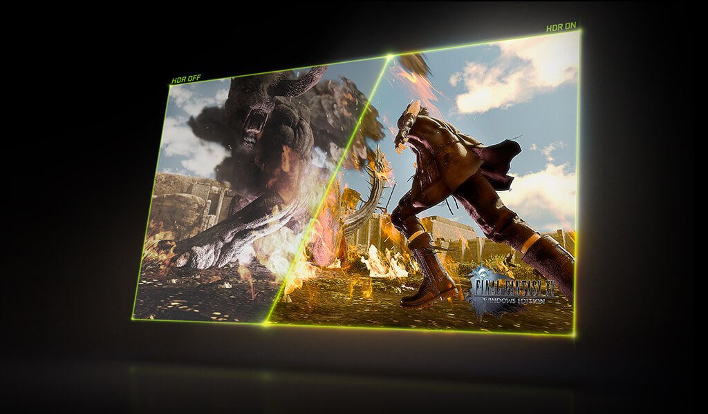
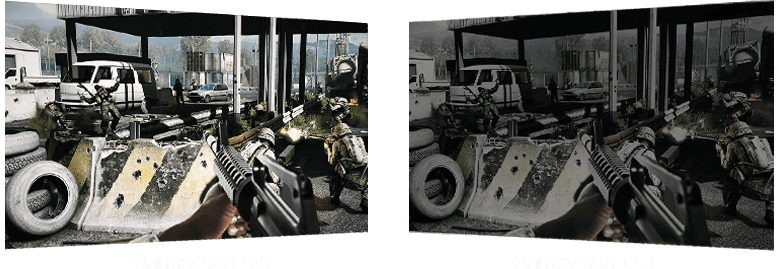
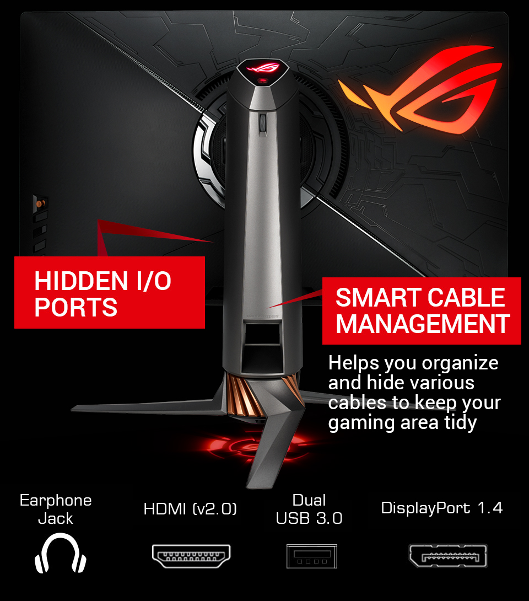

ROG Swift PG27UQ is a 4K UHD G-SYNC™ HDR gaming monitor with an overclockable 144Hz refresh rate for buttery-smooth gameplay. This 27-inch IPS display with quantum-dot technology heralds a new generation of gaming. It provides a wide DCI-P3 color gamut for more realistic colors and smoother color gradation, and HDR technology to deliver vivid details and lifelike contrast. Additionally, a built-in light sensor automatically adjusts the brightness of the screen according to the light conditions of your environment. And with Aura Sync, ROG Light Signal and Light Signature, you can customize your gaming setup to suit your own style. See the future of gaming with ROG Swift PG27UQ.
See the Future of Gaming
4K UHD with Super-fast 144Hz
ROG Swift PG27UQ is the very first monitor to run 4K UHD (3840 x 2160) content at a 144Hz refresh rate, providing gamers with detailed ultra-high definition visuals at extremely smooth frame rates and a 4ms response time. Get unmatched levels of details, sharp images and crisp text.

High Dynamic Range (HDR) with 384-Zone LED Backlight Control
ROG Swift PG27UQ features HDR technology for a range of luminance that is closer to what the human eye can experience, and provides a wider color range than traditional monitors. The brightest whites and darkest blacks are able to
bring out details like never before.
PG27UQ is the first and only gaming monitor with DisplayHDR 1000 certification, the display industry’s fully open standard specifying HDR quality, including luminance, color gamut, bit
depth and rise time that targets not only gaming monitors, but also displays for professionals, enthusiasts and content-creators.
With local dimming, its LED backlight is dynamically controlled across 384 zones, providing very high contrast for richer, more natural-looking dark scenes. It can selectively turn LEDs on and off to create a wide range of dynamic luminance for a much richer, nuanced image. And with HDMI support, you can enjoy super detailed 4K HDR content with your console*, and watch stunning videos on your favorite streaming device.
* ROG Swift PG27UQ currently supports HDR compatible consoles.
Quantum-dot IPS Display for a Cinema-grade DCI-P3 Color Gamut
An IPS display with quantum-dot technology provides accurate color imagery and supports a cinema-standard DCI-P3 color gamut. DCI-P3 enables wider color range than sRGB, resulting in more realistic color reproduction.
NVIDIA G-SYNC Technology
ROG Swift PG27UQ features NVIDIA® G-SYNC™ display technology for the smoothest and fastest gaming imaginable, eliminating screen tearing and minimizing display stutter and input lag. Enjoy the latest first-person shooters, sports and action-adventure games at super-fast frame rates, even at the highest graphics settings!
Aura Sync Lighting

-
 Static
Static
- Breathing
- Strobing
- Rainbow
- Color cycle
- Comet
-
 Flash & dash
Flash & dash
- Wave
- Glowing Yo Yo
- Starry night
- Music effect
- CPU Temperature
With exclusive ASUS Aura Sync lighting technology, Swift PG27UQ provides ambient lighting that can be synchronized with other Aura Sync-enabled components and peripherals.
To achieve perfect synchronization, simply connect ROG Swift
PG27UQ to other peripherals by installing the Aura Sync software on your laptop or desktop. Enjoy the coolest and most stylish backdrop for any gaming setup, and have all lights pulsing to the beat of your favorite music or game sound
effects.
Ambient Light Sensor
ROG Swift PG27UQ uses an ambient light sensor to check the light conditions around you and adjust the brightness levels of the display. The sensor lowers brightness in dark conditions and raises brightness in well-lit conditions.
ROG Light Signal to Show Your Gaming Pride
With a built-in ROG Light Signal in its stand, ROG Swift PG27UQ lets you cast the ROG logo onto the wall to show your gaming spirit and create the perfect atmosphere for your gaming setup.
Customizable Light Signature
The Light Signature projection kit lets you create and customize light effects that are projected from ROG Swift PG27UQ onto your desktop surface. It includes two ROG logo covers and three blank covers that you can use to create customized light projections that show your unique gaming style.
Gamer-Centric Enhancements
GamePlus Technology
A crosshair overlay provides four different crosshair options, so you can select the one that best suits the shooter you're currently playing.
Onscreen timer that can be positioned on the left of the display to keep track of elapsed game time.
The FPS counter lets you know how smoothly the game is running.
*This can be activated while G-sync is on.
Activating the display alignment function gives users three alignment lines on all four corners of the monitor to take the guesswork out of multi-display set-ups, so each monitor lines up perfectly.
Stemming from the ROG commitment to creating the best gaming experiences, ROG Swift PG27UQ features the ASUS-exclusive GamePlus hotkey with in-game enhancements that help you get the most out of your game. This function is co-developed with
input from pro gamers, allowing them to practice and improve their gaming skills.
GameVisual

Racing
Cinema
RTS/RPG
FPS
sRGB
Scenery
Reduces input lag, making it ideal for racing games when G-SYNC technology is on.
Cools and saturates colors for more immersive movies.
Enhances color saturation and contrast sharpness to give you better, brighter colors and detailed visuals for real-time strategy (RTS) or RPG games.
High contrast brightens up darker areas and shadows onscreen to help gamers spot hidden enemies.
Perfect for surfing the web or editing photos.
Provide more contrast gradations makes grass greener and skies bluer so it's ideal for slide shows.
ASUS-exclusive technology provides up to six preset display modes to optimize visuals for different types of games.
Robust Connectivity
ROG Swift PG27UQ offers a wide selection of connectivity options, including DisplayPort 1.4 and HDMI(v2.0). There are also two USB 3.0 ports that can be used to charge your mobile devices while gaming, or to connect your keyboard or mouse.
Designed for Marathon
Gaming Sessions
Ultra-Low Blue Light Technology
ROG Swift PG27UQ includes TUV Rheinland-certified ASUS Ultra-low Blue Light filters to protect your eyes from harmful blue light. Select from four different filter settings via the on-screen menu.
Low Blue Light Level
- 0
- 1
- 2
- 3
- 4
Flicker-Free Technology
ROG Swift PG27UQ reduces on-screen flicker to minimize eye strain during marathon gaming sessions, giving you a more comfortable gaming experience.
Ergonomic Design
Height Adjustment: 0~120mm
Pivot: 0° ~ -90°
Swivel: +35° ~ -35°
Tilt : +20° ~ -5°
ROG Swift PG27UQ features a stand that's ergonomically designed to offer extensive swivel, tilt, pivot and height adjustment - so you can always get the perfect viewing angle.